Late Game¶
The Late Game stage is between the time you reach synchro level 241+ until Chapter 22-36 Boss Nihilister, is defeated a second time. After that, it's the end game, when the new Interception, Anomaly, is unlocked. This is a great time to dive deeper on how bosses work, and what raptures are troublesome to deal with on the short term, and long term. First, let's cover the first real hard boss you will encounter in the game and the main mechanic it introduces:
Introduction of Elemental Shield and Elemental Damage breakdown¶
Elemental shield is a mechanic of Raptures that protects themselves from Nikkes outside of their weaker element. Raptures that are elemental protected are immune from any attack other than their elemental weakness, so the damage will be zero(ingame text will say "immune")
For example, the first rapture that will have this is Mother Whale, that is P.S.I.D (Water Code), it will not receive any damage from Water, Fire, Wind, or Iron Nikkes, unless their Elemental Shield is broken by Electric nikkes or the timer is over.
Elemental shields will be commonly found on later stages in the game on bosses or regular raptures. But, unlike Mother Whale's elemental shield, which can be removed by killing the mobs she summons, almost all elemental shields can only be destroyed by breaking the QTE with their respective elemental weakness. This is specially true when teambuilding for Raids, when you are bringing strong element Nikkes on all teams. Furthermore, elemental damage is a crucial stat for later stages and in Raids to deal even more damage on deficit or to rank better, respectivelly.
Elemental Damage is important because this stat is one of the most valuable in OL (Overload) gears. You can improve your damage by up to 116% just from the OL stats (29% per gear) alone. Pairing that with cubes that can improve your Elemental Damage by 8.48% (level 5 cube) to 19% (level 15 cube) respectively. The game has a lot of calculations for Elemental Damage that it even has its own separate damage calculation/formula.
As per default, your Nikke will receive 10% Elemental Damage bonus, which then can be improved by equipping cubes and getting OL (Overload) stats, which on paper shows that you can receive up to 145% of Elemental Damage. This is why Elemental Damage is a big help when you’re trying to push as far as you can in campaign stages (normal/hard) on deficit.
"Does that mean I should always pick element damage lines over attack lines?" Rule of thumb, yes! Unlike attack buffs, element damage buffs are really rare. Both are great together, but element lines takes precedence.
Mother Whale, Chapter 21 Boss¶
You probably didn’t face any real challenge, not up until now. Synchro levels or combat power won't solve this one easily. Meet the Mother Whale, the second most manual heavy boss in the game (even as of october 2025!). This boss will force you to play manually.
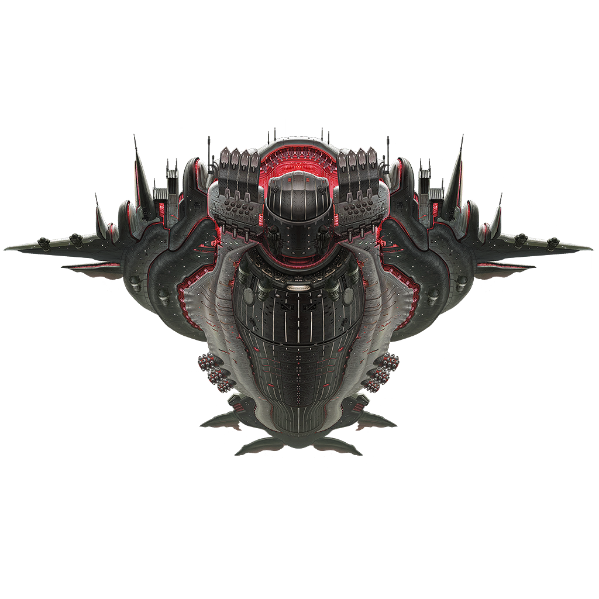
Profile
Class: Tyrant
Element: P.S.I.D (water), weak against electric
Range: Far
Attack Patterns:
-
Spams bombs from port parts that debuff your DEF
Throws massive projectiles at your Nikke which deals damage and hits your DEF. You can destroy the projectiles and also destroy the port parts. -
Calling mobs
When the core is still active, she roars, emitting Ultrasonic Wave that buffs all mobs to be hitcount HP which needs to be hit a certain number of times in order to kill it. This attack occurs in 3 waves of mobs (1 land based, 2 airborne). The mobs buff Mother Whale’s ATK so be mindful of the damage you take.
For the first wave, she generates an Elemental Shield that protects her, but it can be destroyed by killing all first wave mobs on the ground. You have to kill them fast, otherwise she calls the second wave of mobs and it becomes increasingly more difficult.
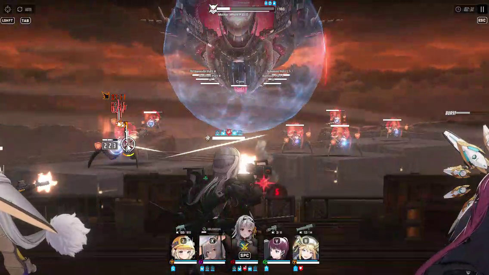
The Mob only receives 1 damage per shot (courtesy: kampretlordz gameplay)
Destroying Mother Whale’s core (a bit below her belly in the middle) prevents her from roaring and buffing all of her mobs. Just keep in mind that the core is tanky if your Nikkes aren’t invested enough. If you want to play by the rules, just delete the mobs as fast as you can.
-
Hurtle
This is just a basic attack where she rushes forward and deals damage to your Nikkes. Make sure to cover or generate shields to try and negate as much damage as you can. -
Calling out Master-class mobs that can wipe all your Nikkes
This is by far the most annoying attack. She calls Master-class raptures which are tanky and hard to kill. They also do barrage attacks that deal damage to all your Nikkes. This cannot be avoided or prevented, even if you try to kill them before they can attack. Fortunately, this attack can be taunted to one Nikke, so you can avoid being completely wiped out.
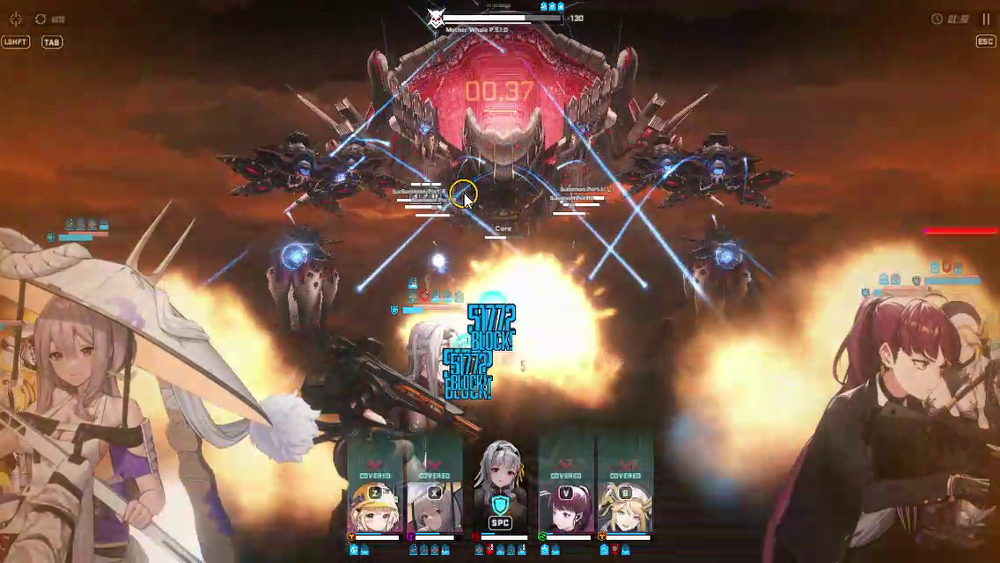
Master mobs are barragging a random Nikke (courtesy: kampretlordz gameplay)
- Second cycle
After doing the patterns above, she then goes near the regen ports and goes back to its first pattern of attack. Then it calls mobs similar to the second pattern, but no elemental shield in this cycle. She can shoot Laser Showers that deal damage to all your Nikkes.
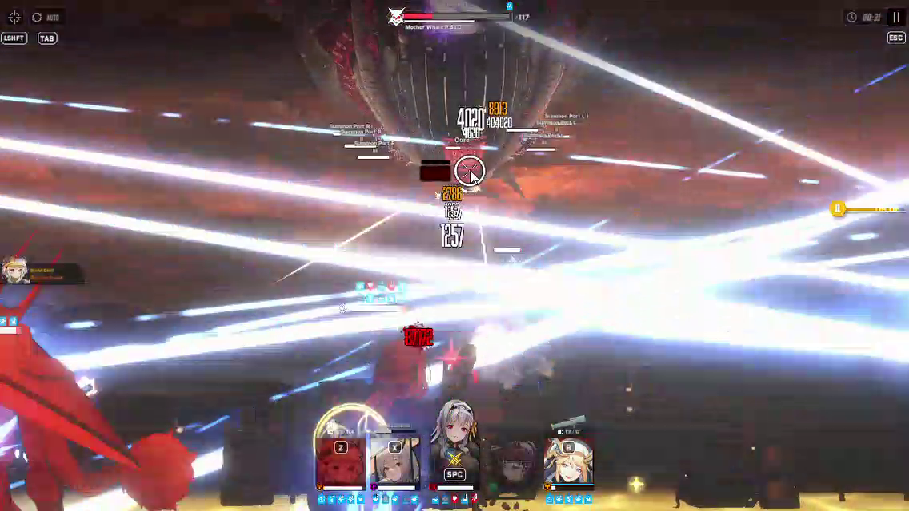
Laser Showers (courtesy: kampretlordz gameplay)
What you need:
- AoE and/or Distribute Damage Nikkes
Distributed damage is great because it ignores defense even when buffed as the mechanic of this attack states that the damage dealt will be distributed evenly no matter what. Mobs have very low HP so distributing damage can kill them fast.
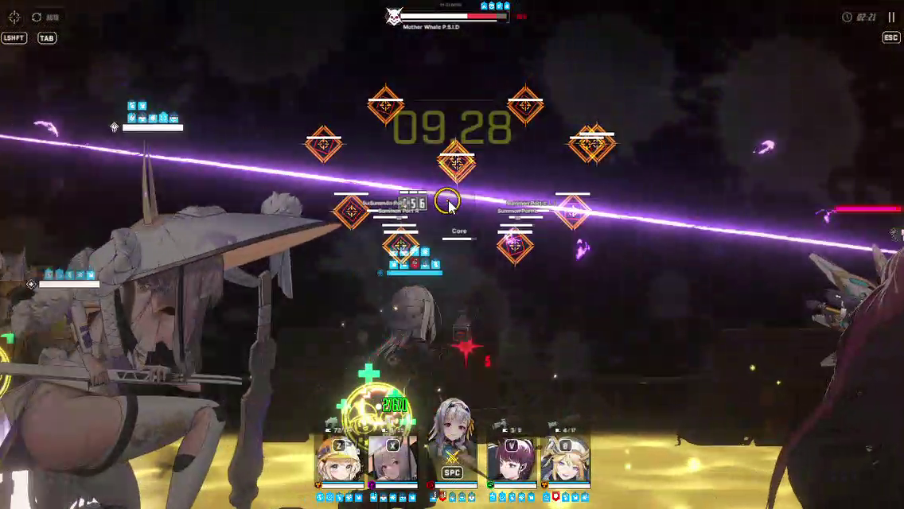
Scarlet kills all mobs with her burst skill (Courtesy: kampretlordz gameplay)
If you bring Distributed Damage Nikkes, keep in mind that she can’t wipe mobs when there is an elemental shield active (except Electric code). This is because Distribute Damage works when it hits ONE enemy (Mother Whale herself) then distributes it evenly to the remaining mobs. If you hit the Elemental Shield, the damage will be zero and will be distributed as zero damage. So, you have to kill them one by one or wipe them out using an AoE burst first.
If you bring an AoE burst, you have to wipe it quickly before the mobs get buffed because AoE attacks are counted as 1 hit.
Dorothy is the best choice here as she deals fast distributed damage with her skill 2, then after 10 seconds when her burst ends, the accumulated damage will be released to the enemy through distributed damage. You can try using Scarlet Black Shadow’s burst on the 2nd cycle when she calls the mobs (after you clear the 1st wave mobs). For AoE Nikkes, there are a lot of options like Scarlet, Ein, Mari, Privaty Unkind Maid to name a few.
Ein’s burst specifically will hit 10 enemies on screen, Mother Whale calls 10 mobs first, so you can try her out.
- Taunter
Taunters tank the Master-class raptures attack (and to some extent, tanking spam balls), as their attack is unavoidable and can wipe out all your Nikkes. Luckily, this can be taunted to target 1 Nikke. Though, this usually means that you will be sacrificing the taunter so you’ll be left with 4 Nikkes for the rest of the fight.
Options for taunters include Crown with manual play, Tia, or Diesel. If you bring Crown, you have to use her manually after the Hurtle attack so you can have 20 stacks when the Master mobs appear. As for survival, if you can stack at the right time, she can avoid being killed because of her immunity skill. Diesel (with her treasure) can heal herself, so you don’t have to worry about her dying.
You can skip this if your CP is high enough, usually you will survive with the cover being destroyed.
- Healer
Most of her attacks are unavoidable, so a healer/form of healing is necessary for survival. You can’t wipe all the bombs that come to you, as you have to shoot the main body to deal damage.
Blanc, Naga, Rapunzel are the best choices here. Blanc will give immunity to a low HP Nikke. Rapunzel can revive 1 Nikke and you can use it to revive the taunter after the barrage of the Elite-class rapture. Naga, paired with a shielder (Tia), can help make it easier for you to destroy the core.
Crystal Chamber¶
Chapter 28, 30 and 31 BOSS
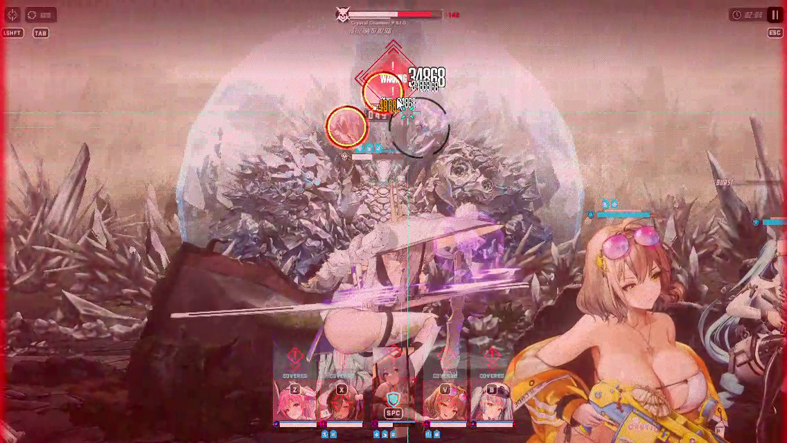
Mirror Container, Chapter 32 BOSS¶
The hardest boss to date (as of 07/10/2025). Has defense buff mechanics and parts that you must destroy with only 1 strong shot. If you ignore this, your damage will be as soft as a wet noodle or worse, only dealing 1 damage per shot. This rapture shows us how important elemental damage is.
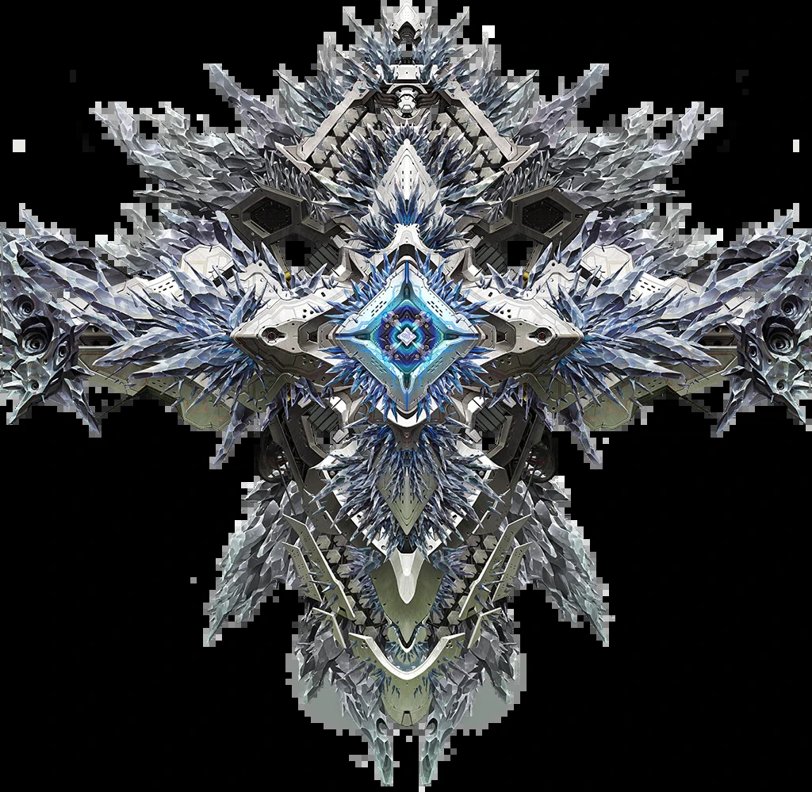
Profile
Class: Tyrant
Element: P.S.I.D (water), weak against electric
Range: Far
Attack Pattern:
-
Glass Slippers (replica)
It throws projectiles that targets random Nikkes. Can be intercepted or i-framed. It shoots a MG and aims for the Nikke with the highest attack. After that, it summons Glass Slippers that must be destroyed by 1 strong shot. You can ignore them and heal back or try to shoot it. This happens 3 times. After that, it will call all Glass Slippers and do AoE attacks. Break the QTE circles to cancel it. Then it does the special interruption QTE. This attack usually takes 1 minute but can be faster if you are able to destroy the slippers. -
Glass Slippers: Defense Mode
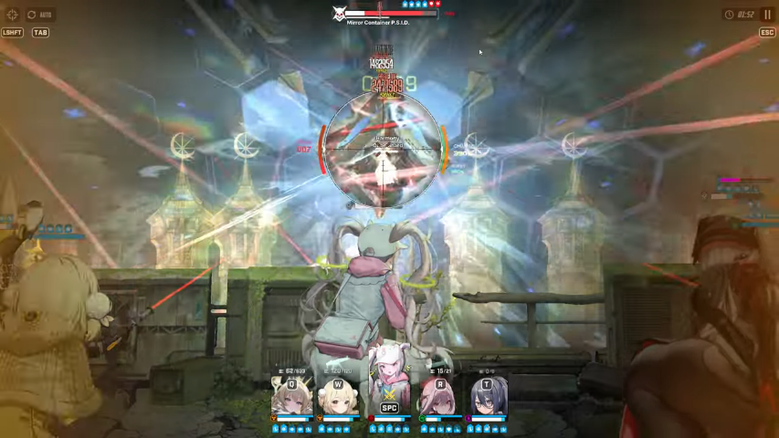
Spawns Glass Slippers to buff his DEF (Courtesy: Kontossis on youtube)
It comes back and buffs itself with 360% ((90*4)%) DEF from the slippers. This defense buff makes you hit like a wet noodle. First, it shoots a crystal that deals AoE damage, then it will spawn the slippers and go into attack mode. You can tell when the slippers are going to attack when they start glowing blue. They have to be destroyed by a single strong shot to remove 1 layer (90%) of DEF buff. Repeat this 4 times until all the slippers are destroyed. Each shot removes 1 layer (90%) of the DEF buff.
If you can’t destroy slippers, just shoot to stun it because slippers attack mode deals huge damage to your Nikke (not recommended if your Nikke is CP high diff).
- Glass Slippers: Destroy Mode
Going all out. Restore Slippers to Buff DEF again by 360% with an Elemental Shield. Spinning and charging attacks that can kill all your Nikkes. This can be canceled by destroying the QTE.
While shooting the QTE can cancel the attack, you’re only going to be **dealing 1 damage per sho**t. Remember that he just buffed his DEF again, so your damage goes back to being like a wet noodle. Supporter Nikkes like Naga are heavily affected by this because of her low base ATK and low % buff. Even Attacker Nikkes find it difficult to clear the circles. It’s advisable to time your Full burst mode with as many buffs on your party to clear the QTE or if you have Electric type Nikkes that have a lot of attack buffs, it’s possible to destroy it.
After you succeed in clearing the QTE circles, it just does the #2 attack pattern again. You have to keep destroying the slippers until the fight ends.
What Nikkes to bring:
- Electric type DPS
Obviously for optimal damage and to cancel the Elemental Shield. Note that you have to pick DPS because of his #3 attack pattern mechanic. You can try Naga with a lot of buffs but it’s not recommended for higher diff CP.
Anis: Sparkling Summer is the best choice here, you can pair her with any Electric DPS Nikke to support her.
- Snipers / RL’s
Remember that you have to destroy Glass Slippers in one shot, so non charged weapons are not recommended. Slippers will input 1 pellet from any weapon as damage, then it will be immune. Snipers, when charged, can deal huge damage in one shot.
You can imagine that Slipper's HP is 4 million, SG’s per shot deals 4 million damage, but it’s divided into 10 as SG’s fire 10 pellets per shot. Snipers could do 4 million damage just from one shot.
- Healers (optional)
If you want to tank Phase 1 slippers or AoE crystal, you should consider bringing a semi/healer as a companion. The best choice is Naga as she is Electric, too.
The best Nikkes against Mirror Container are Ein and Cinderella. They are designed to fight this boss. They fulfill the #1 and #2 requirements which are Electric type and Snipers. Ein’s skill deals true damage so she ignores Mirror Container’s DEF buff.
How to destroy Glass Slippers:
When it summons the Slippers, wait when it enters Attack Mode. Slippers will start to glow blue and will start going backwards. You can see in the image below.
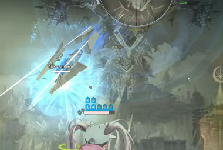
Glass slipper: Attack mode (Courtesy: Kontossis at youtube)
If you shoot it when you are off burst, you can just charge your sniper/RL and aim it on the slipper. But this attack only works if your damage isn’t 1 damage, as off burst damage will be low. The AI will shoot Mirror Container core when off burst so it’s safe to keep manualing
If you shoot it when you’re full burst, you have to command all Nikkes to take cover, then you manually use the Sniper Nikke to aim and shoot. This is because when you’re in full burst, all Nikkes will follow your crosshair to shoot the target. You don’t want the other Nikkes to shoot Slipper making them immune to damage.
Behemoth: Chapter 34 BOSS¶
Profile
Class: Tyrant
Element: P.S.I.D WaterCode, weak against ElectricCode
Range: Far
Prerequisites
Before anything, cap your game fps to 30. Why? You can cheese attack this way. The rocks, that can almost one shot you if not destroyed, will move really slow towards you in 30 fps. For easier control and survival deactivate auto burst and auto shoot.
What Nikkes to bring:
Electric Burst 3 DPS: Cindy > Summer anis / Maiden: Ice rose > Ein / Ada
Cindy is tailored for behemoth, almost to a fault. Sanis and Xmaiden are next, both as dps and buffers. Ein and Ada are there if you miss the rest. The problem of electric bosses are that most of the good units are limited or pilgrims. Without them, or new nikkes, both MC and behemoth are really hard.
Supports / Off burst: **Crown + HelmT > Maid Mast + Maid Anchor > Blanc / Grave / Bunny Ade > Naga
Crown is the best burst 2 ingame, and continues to be here. HelmT (with her favorite item) is also great for phase 3, as you can ignore the boss damage and overheal. The maid duo is also an option if you miss her, but that means 1 less burst 3.
CDR Burst 1: Rapi:RH / Rouge > Liter / Siren > ExiaT(needs cdr)
Rapi:RH and Rouge are the best choices, but pick only 1. Rapi if you need a lower deficit, and rouge if you are after a higher deficit clear, but take note that rouge needs ammo lines for burst gen, otherwise it will be a lot harder to upkeep full burst often. If you miss both, Liter is the next choice. Siren is also really good on breaking rocks on manual, but she lacks stronger attack buffs. ExiaT is the unconventional pick. Only pick her if you can run a CDR alongside her, and for whatever reason you have her really well built and miss burst 3 units for dps.
The 2 most used teams are:
Cindy Rouge Sanis Xmaiden Crown
Cindy Crown RapiRH Sanis HelmT
Attack Patterns:
Behemoth has 2 forms and 2 attack phases. First form is what looks to be an excavator, that you will fight briefly on the first seconds of the fight. The second form is that of a bull, which will last until the end of the fight. Second form first attack phase is "rock throwing", and second attack phase is "rage mode".
Phase 1 Exacavator form- Start of the fight
1 Phase 1: Machine gun
After 5 to 6 seconds from the start of the battle, the machine gun, the part on the middle of the excavator, will target the nikke with the highest final attack.
ADD IMAGE
Notice how the bullets flying are blue? Make sure to remember the sound and visual clue of them, you will need to remember it for later. It may not hit hard on each shot, but not to the point you can ignore it. Swap to whoever is the nikke is the target, and cover. If you are running rouge as the only "healer/hp buffer", you will need to cover every single bullet.
2 Phase 1: Missiles
After the minigun attack finishes, behemoth will move slightly to the right, then all the way to the left outside the screen. Three missiles barrage will be launched. They are destructable, so make sure to shoot them down. There is no need to use your burst again, wait for after the phase change attack.
Phase Change
Behemoth will turn into her Bull form after a little animation. You can skip it. Take note that in bull form, behemoth will have 2 machine guns on the front shoulders, it is possible to break them on normal 34, but akin to impossible on hard 34.
Phase 2 Attack patterns
If you capped your game fps to 30, then this part is easier.
Rock Throwing
Behemoth will stand still for some seconds, and afterwards will throw a rock at you. Be mindfull of your full burst duration, you will need all the buffs to be able to break it, as each rock has a lot of hp. Fail to do so, you might get wiped or close to it. She will throw another rock after you break the first after a short delay, use the delay to gather burst gen if the full burst ended or is almost ending.
Machine guns and missiles
After the second rock is broken, same as on the first phase, the machine guns will target highest final atk nikke, but unlike before, they will hurt a lot. You need to cover quickly otherwise your dps might die. After behemoth is done shooting, missiles will slowly fly towards someone. They have very little hp, even at off burst you should be able to destroy all.
Elemental QTE shield and repeated skills
2 Rocks, same dance. But instead of machine guns immediately, a elemental QTE will happen. You can stall for damage here, as behemoth will stay still for as long as the QTE is up. Break it on last seconds, or when full burst is ending to start building up the burst bar.
After the QTE shield is down, machine guns will shoot highest final atk nikke. 2 more rocks, machine guns and missiles afterwards. 2 more rocks, slight delay and another elemental QTE shield, once it is down, machines guns and missiles once more.
Bull Ramming, QTE Wall
While the missiles from last attack are flying, behemoth will jump back, start charging towards you and ram all nikkes. Either let crown shield tank it, or cover!
After hitting her head, behemoth will get stunned for a short while and jump back again. Shortly after, a QTE wall will appear. The quickest way to break it is with rapi:rh drill or xmaiden full charged shot at the middle. After you clear the QTE, behemoth will be stunned again, don't use your burst, she is about to go into rage mode.
Rage mode, bull ramming and another QTE wall
Behemoth will jump backwards, and lighting will cover the screen partially. You will burst with helmT, maid anchor, or rouge depending on the team you are using to survive this QTE phase.
The damage will ignore cover, so the only way to survive is to overheal it, or tank it with fake hp shields. Break the QTE circles asap, the damage end with it.
After it, behemoth will charge and ram again, but will not be stunned and instead will slide off the screen. After a short stall, another QTE wall. Same as before, rapi or xmaiden for instant clear.
Rage mode and last seconds.
After the QTE wall is out, behemoth will get stunned and enter rage mode again. Use helmT, maid anchor, rouge to tank it, or if believe you can nuke the last bars before you die, gamble and use your dps burst.
When you break the QTEs from rage mode, you will have maybe 10 to 14 seconds left. That is the time to use xmaiden burst for a last surge of damage, or anyone else that you might have.
If you ran out of time, even at a low deficit, don't worry! Behemoth is the first real damage sponge in the game. Wait for a couple of synchro levels or any improvement in your nikkes.
Black Snake: Chapter 36 BOSS¶
Profile
Class: Tyrant
Element: H.S.T.A FireCode - Weak agaisnt WaterCode
Range: Far
WIP
Glutonny: Chapter 38 BOSS¶
Profile
Class: Tyrant
Element: A.N.M.I Windcode - Weak agaisnt FireCode
Range: Far
WIP
Ziz: Chapter 40 BOSS¶
Profile
Class: Tyrant
Element: A.N.M.I Windcode - Weak agaisnt FireCode
Range: Far
WIP
Anomaly Interception (AI)¶
Unlocked after Chapter 22 is completed, stage 22-36 Nihilister second encounter.
Each boss comes from previous Solo Raids or story chapters with increased difficulty and phases. The level cap is 400, but it’s not fixed, like the Special Interception.
This might sound like a bad thing but, at the same time even the first stage of AI, Stage 1, gives better rewards than Special Interception.
Another really cool thing is the
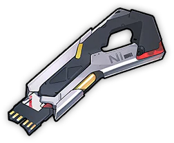
Custom Lock that you get when you clear AI. You can get these from any stage. They allow you to lock OL lines, 20 custom locks for 1 line locked, 30 for another one at the same time. Even if it’s just once and you have to lock again each time, it’s still better than just locking with custom modules(rocks).There are 5 bosses, each with the same set of base rewards and also Boss-specific additional rewards linked to each.
All items that are guaranteed to drop from Stage 1:
Tier 9 fodder gear, custom locks and gear pity boxes  with the exception of Kraken, as it does not drop gear pity boxes.
with the exception of Kraken, as it does not drop gear pity boxes.
They also have the chance to drop 1 to 3 custom modules  (rocks), the drop % changes depending on the Stage you reached.
(rocks), the drop % changes depending on the Stage you reached.
However, the main benefit of doing Anomaly Interception is that you can choose what boss you want to fight.
Kraken  custom modules and custom module pity boxes but DOES NOT drop any t9m gear
custom modules and custom module pity boxes but DOES NOT drop any t9m gear
Ultra  chance to drop t9m helmet and guaranteed helmet pity boxes
chance to drop t9m helmet and guaranteed helmet pity boxes
Indivillia  chance to drop t9m chest and guaranteed chest pity boxes
chance to drop t9m chest and guaranteed chest pity boxes
Mirror Container  chance to drop t9m gauntlets and guaranteed gauntlets pity boxes**s
chance to drop t9m gauntlets and guaranteed gauntlets pity boxes**s
Harvester  chance to drop t9m boots and guaranteed boots pity boxes
chance to drop t9m boots and guaranteed boots pity boxes
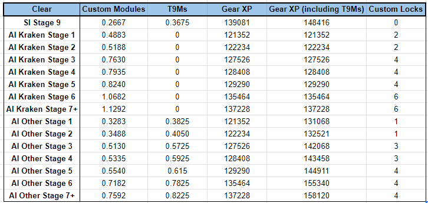
Sheet credits to akusetsu
Guides for the boss:
Kraken¶
The easiest boss that you encounter in AI. His main body is in the middle. His tentacle is the core. Punching bag boss at it’s finest.
- First phase
Destroy the front tentacle as fast as you can. If you ignore this, he slaps all your Nikkes. The tentacles are tanky, but fortunately his front tentacle is a core, so you can deal bonus damage to it. The attack pattern will be:
- Tentacle slap, twice
Tentacle slap hits all Nikkes, and it pierces the cover, so if you bring an Electric Nikke, you have to destroy it because usually insta-death to Electric Nikke. You can deal bonus damage because the front tentacle part has a core. - Throwing rocks
This attack lets Kraken throw rocks to your Nikke, but it doesn't pierce the cover. We suggest bringing a shielder Nikke like Crown/Tia to block these attacks, so you don’t have to take cover. Time your shielder burst to block this attack.
If you don’t bring a shielder, but bring a healer, you can just tank this attack (if your healer isn’t electric). If you don’t bring shielder Nikke and healer, just take cover.
- Elemental QTE
This attack can wipe all of your Nikke, so you have to destroy QTE. Manualling your Wind Nikke to aim when off burst.
In this phase, I suggest you aim for the front tentacle when they appear, core damage is your advantage to deal great damage.
This attack sequence happens twice, after that, it will expose the core on his main body and dive. When he dives, special interruption.
2. Second phase
Same as the first phase, but its front tentacle will be a lot squisher, but still needs full burst to destroy fast. Its back tentacle will shoot your Nikke so you have to destroy it too.
What you do is aim on the core of the main body while destroying the front tentacle when he is wiggling his tentacle. Destroy the back tentacle when off burst to prevent him shooting your Nikke. Back tentacle targets random Nikke so he may shoot your support or your main DPS, the problem is if you bring an Electric Nikke (usually Naga) then he decides to shoot down that Electric Nikke.
Team Building
Burst 1 and 2 will be Liter and Crown, then you can choose Wind Burst 3 Nikke as main damage.
- Sweaty: Scarlet Black Shadow with her assistant, Alice. Flex is Naga. If you bring Naga, you have to destroy all the parts.
- Boomer Finger: Scarlet Black Shadow with Sakura: Bloom in Summer. Flex will be Naga. you can try Noir as an alternative Naga and make the run less sweaty.
- SG team with Noir and Guilty works against this squid, with Blanc as healer. They can deal decent damage because of the big target of the main body.
Ultra¶
This Ultra has a destructible core unlike campaign counterparts, so his core isn’t permanent. He never moves so basically acts like a punching bag for Pierce-type Nikkes.
Ultra parts can be hit using pierce by just hitting the core. You can deal damage 4 times by just hitting the core using piercers when his core and poison chamber parts are active. And Ultra range is far, so perfect for snipers Nikke.
Attack Pattern:
Phase 1:
- MG attacks, targets highest ATK Nikke Classic MG attack, but usually if your Nikke is well invested, this attack can’t hurt your Nikke. You can manually let the targeted Nikke take cover if not well invested or it targets Water Nikke.
- QTE (Elemental Shield)
If you ignore, Ultra will blow all your Nikke, dealing huge damage. Shoot QTE to cancel it. - AoE stun, can be blocked by shield
This attack can be blocked by shield, timing your shield burst (Crown/Tia) when he’s ready to stomp. - Spits poison (DoT) I suggest you taking cover because this DoT is no joke if you don’t bring a healer. This attack can kill your Water Nikke fast.
This attack occurs twice, then he sheds his skin and enters Special Interruption
Phase 2:
- Flings poison if the parts aren’t destroyed (DoT)
Destroy parts fast to cancel this attack, because DoT is not a joke when it hits Nikke. - AoE stun
Same as first, timing your shield - Spits poison (DoT) Same as first phase too, take cover
It will restore his core at stages 2, 4, 6 and 8, so be prepared to manage your full burst for this. At stage 2, the respawning core overlaps the previous one (it’s the only time a respawning core overlaps the previous one). That means if the first core wasn’t destroyed by the time you hit stage 2, the core gets back to 100% hp. This only happens on stage 2. If you don’t destroy other stage cores in time, the next stage cores don’t overlap them. So if for example, you don’t destroy the stage 4 core by the time you hit stage 6 and then destroy it after you hit stage 6, the core will not respawn or get back to 100% hp so you lose one full core.
Stage 4 core is the second one that has two mechanics in it: first mechanic is if you don’t hit stage 4 within specific frame (when he starts charging his stun attack, he shouts, if you don’t get to stage 4 before his shout stops), the stage 4 core will still respawn but it will drop its max hp by 80-85% thus dropping your damage a lot. You can either stall his first triple QTE to delay his charging attack here if you don’t have the damage to get to stage 4 fast, or just damage race to stage 4 fast if you got the damage to not allow the core hp reduction (another option is to crit fish with Maxwell and hope her burst crits there).
The second mechanic of stage 4 core is that it, along with every other core (stage 6 and stage 8) and the sacs increase their HP by a lot so it gets a lot easier to shoot them without worrying you can accidentally destroy them with Red Hood or something before Maxwell bursts for example. His AoE spit poison attack can be tanked by a decent shielder up until stage 8. At stage 8, his damage increases enough that the spit breaks the shield so you need to take cover (awesome21snake: 2024).
You can put all Iron Nikkes in your team. For example, a team consists of Liter and Crown as burst 1 and 2, for burst 3 DPS, you pick Red Hood, then choose between Snow White or Maxwell (which have higher Elemental Damage OL line). For flex you can pick Helm: Aquamarine to amplify your team damage. If you need survival, you can take out one of the Iron-type Nikkes, for example Naga is a good choice for extra core damage.
Mirror Container¶
Basically it's the Mirror Container in Chapter 32, but easier. Core is permanent, so you can deal more damage. Glass Slippers (replica) only shows up in 2 cycles. The most important difference is that **it will not restore Slippers that buff DEF by 360% when going into Destroy Mode. **
Team Building gameplay will be the same as the Mirror Container Chapter 32 Boss. Cindy and Xmaiden or Ein with Anis: Sparkling Summer is your best choice against it. Example comp would be Burst 1 and 2 Rouge with Crown and if you want to optimize Cindy’s damage, you can put Siren or Liter instead of Rouge. Flex can be Maid Mast if you miss xmaiden.
Harvester¶
This spider likes to call mobs during the fight. These mobs distract your Nikke and the attacks are the kamikaze type so if you ignore them you’re likely to lose a Nikke or two. The difference from campaign mode Harvester is that this spider has a core on his head and you need to destroy it first to access the core.
Indivillia¶
Hardest boss that you can encounter in AI. Has an attack that is unavoidable, so your iron supporters (Liter and Crown) have a high chance of dying. Has the highest base Defense stats and moves around a lot so hitting the core can be difficult.
Problem is, our best fire DPS Nikkes besides Alice and Modernia for now (November 2024) are Nikke from Evangelion collab (Asuka, Rei). If you skip them, then your option will be limited until dev introduces another good fire DPS again.
Tyrant-class Boss Tier List
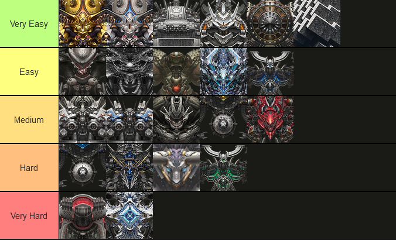
As per October 2025:
-
Very Easy: Generic attacks (laser, projectiles, interceptable AoE attack) and usually won’t be needing a healer to do a good run. Canceling their gimmicks usually disables them completely. Basically a punching bag Rapture. Auto friendly, you might need to manually aim at the QTE circles. Can run a generic team (all weapons) with at least 1 elemental advantage included.
-
Easy: Generic attacks, same as above, boss is also a punching bag but has 1 gimmick that can’t be disabled, HOWEVER can be dodged. Suggested to bring healer against this boss, but it’s fine even if you don’t as the attack is cover dependent as well. Somewhat auto friendly and you still need to manually aim to shoot QTE circles. Can run with a generic team (all weapons) with elemental advantage included.
-
Medium: Generic attacks and has gimmicks that can be annoying but manageable. Bring a healer or cover repairer to solve this gimmick. Not as auto friendly as the others, but you can run a generic team (all weapons) with elemental advantage included.
-
Hard: this has 1-2 annoying gimmick skills that need some planning. Healer is necessary to deal with their gimmicks. Does unavoidable attacks that deal a lot of damage. Not Auto friendly but you can run a generic team. It’s advisable to bring certain Nikkes to deal with their gimmick for an easier run.
-
Very Hard: has a lot of gimmick attacks that forces you to run certain Nikkes to deal with them. Even if your Nikke level is higher, they can still kill you if you don’t know how to deal with it. Very much NOT an auto friendly stage. Certain Nikkes are needed to deal with this kind of Rapture.